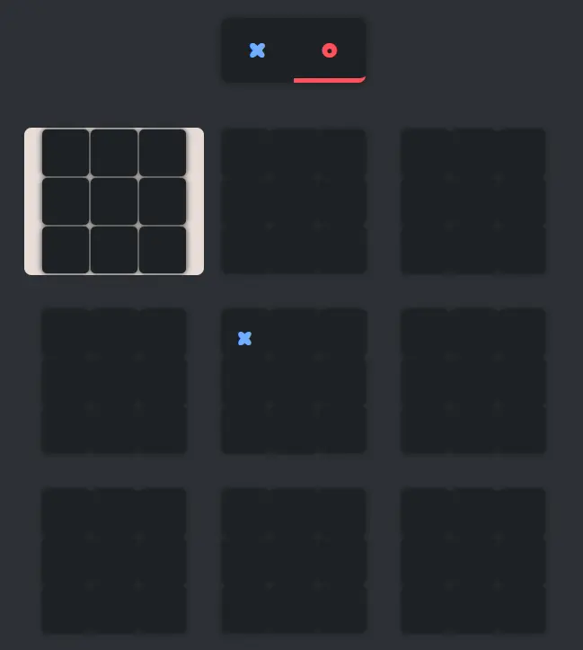
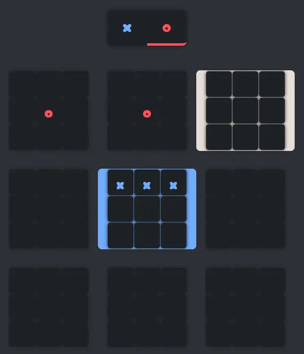
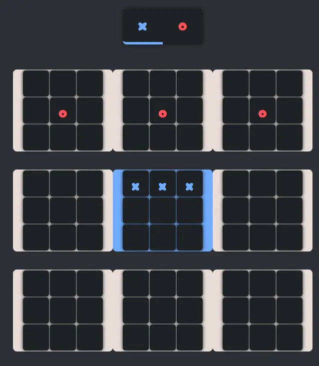
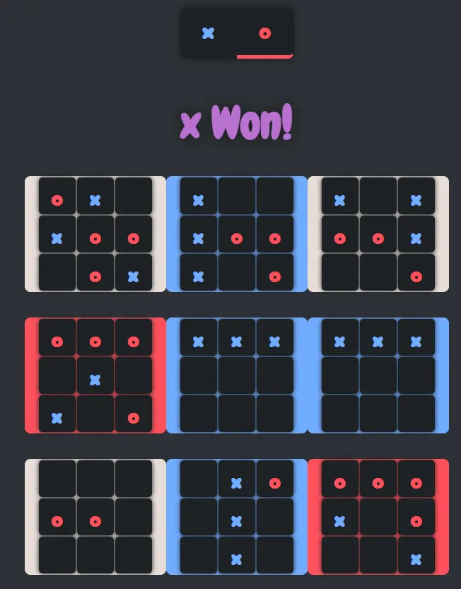

Ultimate
Website to play Ultimate Tic-Tac-Toe with a friend!
A complex version with nine tic-tac-toe boards forming one giant board! Wins on the smaller boards only count as moves on the larger board. Win the whole game by getting 3-in-a-row on the large board!
Responsibilities
Developer
- Designed and implemented a component-based React architecture.
- Built complex game logic, including multi-board state management, move restrictions, and conditional board activation.
- Managed shared and local state using React Hooks to coordinate turns, board activity, and game outcomes.
- Implemented client-side routing with React Router for easy navigation.
- Styled the application with CSS, focusing on visual feedback for a complete gameplay experience.
Process
Overview
Ultimate is tic-tac-toe with a twist! It takes the traditional 3x3 board and adds a smaller board in each square. Then, the two players take turns moving on the small boards. If you win on a small board, that counts as a move on the large board. Here's where it get tricky. Your move is determined by your opponent's previous move. Whichever square they mark determines the board you play in. For example, playing in the top right square on any of the smaller boards sends your opponent to the top right square on the larger board. Their move in that square then determines your next move. The game ends when a player wins on the large board, or there are no moves remaining (tie).

Planning
I began with mapping out the game rules and mechanics to understand the necessary components and state management. Each small board would need to send up the information of where players last moved to inform the larger board. This meant created a Javascript class for the small boards that checked for wins, checked moves, and handled clicks. So, I built and tested a 3x3 board with standard gameplay before scaling up to the nine interconnected boards.

Connecting


Once the smaller boards were set up, I could begin handling the game logic between boards. I first began with move-direction activation, to dynamically control which boards were active based on player moves. An opponent could only play on the board in the same position as the move of the previous play. If that board was already won or tied, the opponent could play on any other available board. This required careful state management to track the status of each board. Beyond that, the individual board logic would handle small board clicks and wins. Finally, I iteratively tested edge cases, including full boards, redirected moves, and win detection. With all of the logic complete, I styled the application to provide clear visual feedback such as colored squares to indicate wins/ties of small boards, active board indications, and a turn indicator at the top. I also added a home page and a rules page to explain the game.